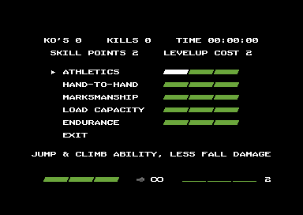
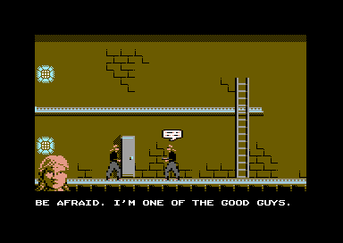
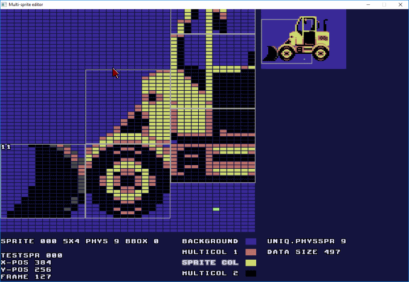
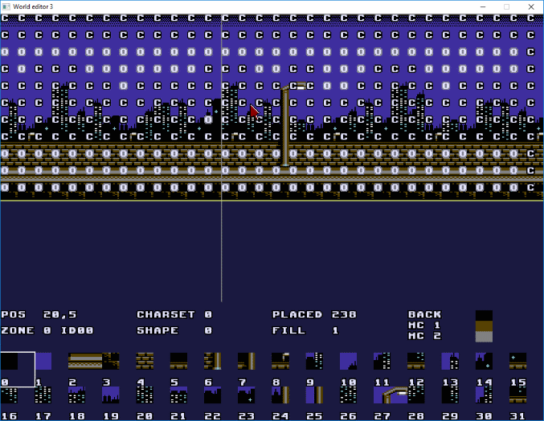

Some time has passed since last update, and the game has also progressed much in the meanwhile, bringing the game's always-resident engine code to almost completion.
After getting the weapons in, it was time to look at how the enemies and NPCs do navigation / pathfinding in the game world. The early Metal Warrior games did not have much movement AI to speak of, the enemies either made random decisions at junctions, or just tried to home at the player.
Metal Warrior 4 and Hessian both use a kind of "ad-hoc" pathfinding, where the character looks for routes of opportunity at their current location. For example if the target is below, and there is a ladder leading down at the character's feet, it makes sense to climb down.
This works well most of the time, but trouble arises when the character is far from a junction, and doesn't know whether to go left or right first. This could lead to them trying the wrong direction first, appearing less intelligent.
This kind of pathfinding was also initially in use for MW ULTRA. But as the old problems reappeared, it was time to see if something better could be done.
The ideal solution would be a full precalculated navmesh of all walkable / climbable sections in each area, with information on how the sections are connected, but the memory use would easily be too much for the C64. Therefore a simpler "halfway" solution was developed. The world editor now automatically detects the walkable platforms, stairs and ladders in each area, and store their coordinates / sizes, but doesn't store connection information. Instead, the character AI finds out the next adjacent section during runtime. It also knows the section the target character (typically the player) is on,
and tries to choose the next route step which allows to get closest to the target. Finally, any large drops and platforms the AI shouldn't attempt navigating to, can be tagged in the editor. This is to avoid getting stuck in a loop when the player character for example uses the grapple gun to get above, but the AI cannot follow.
With this system in place, enemies now appear to react intelligently to the player's position, and re-evaluate their route as necessary. For example if the player opts to drop from a large height (and likely take fall damage), the enemy will instead turn around and head for a ladder down if available, to reacquire the player on the platform below. Each navigable section takes 5 bytes of memory to define (type, coordinates, size) and there can be a total of 48 in a single scrolling area. The exact amount can be adjusted later as necessary.
After pathfinding, the next step was to work on "indicators" that appear on top of an enemy's head to let the player know their status. An exclamation mark appears when they see the player. Lethal and non-lethal defeat of an enemy also have their own icons.
Then it was time for another larger feature which had been postponed for a while, the stealth gameplay elements. The enemies already could detect line-of-sight to the target, so it was possible to hide from sight above or below a solid platform, or behind walls. But open areas allowed the enemies to easily detect and fire on the player, so something more was needed. With a few good suggestions from the Lemon64 forum, the game now implements "cover objects" like pillars or closets, that the player can go hiding next to. This is activated by pressing up on the joystick; the player character appears to go a little further in the depth direction. Enemies' sight is now blocked from the side of the object. If an enemy will then walk by, not yet alerted, the player can perform an attack with a surprise damage bonus.
Stealth mechanics also needed the reimplementation of the "make noise" feature from Metal Warrior 4. Footsteps, gunshots and all other sounds define a radius in which they make the enemies suspicious. This is indicated by a question mark indicator. The loudest sounds always alert every enemy on the screen no matter the distance, and like in Metal Warrior 4, for a time all new enemies coming into the view will be automatically suspicious.
The final piece of the stealth gameplay rules was to make it so that a suspicious enemy, or an enemy that has seen the player once, will also automatically look above and below non-solid platforms, while a completely unalerted enemy doesn't.
A "rock" weapon was added, also after Lemon64 discussions, that the player has an infinite supply of. These can be used to deliberately make small noises and distract enemies, but owing to the rule above, that can be actually turn out a very bad idea!
Next up was a small detour back to the soundtrack. There were now the long level songs, and the bossfight tunes, yet something was missing. Hessian used to load a short gameover tune whenever you died, which meant a loading break (not good!). Therefore MW ULTRA turns back to what Metal Warrior 4 already does: every level has also its unique gameover theme. There ended up being 12 of them, lasting only a few seconds each. Several use the same chord progression as the "death theme" from the first Metal Warrior game: Am - A# - Am (transposed according to the key of the level song). One or two of them should never be heard, as it should be impossible to die in some of the levels, but for the sake of completeness they're still there.
For a long time, dying in the test version meant reloading. But finally the game gained the pause / gameover menus similar to Hessian and Steel Ranger, and restarting from last entered area became possible. The final game will need some designing in this matter, it might be useful to have enemy-free "save rooms" which checkpoint the player, followed by longer stretches of enemy-filled areas that don't checkpoint. This would avoid respawning in the middle of trouble, with health down to the last recharging segment.
MW ULTRA will have light RPG elements similar to Metal Warrior 3: defeating enemies or completing other tasks will fill the experience bar on the bottom right of the screen. Once the bar is full, a "skill point" for upgrading the player character's skills is awarded. The skills will give damage bonuses, speed up weapon reloading, improve jumping and climbing abilities, allow for more carried weapons / ammunition, and improve damage resistance. Implementing both the XP gain and skill effects was straightforward enough, while the combined skill upgrade and stats screen (shown below) was more work.

After the skill menu, the final thing to work on before writing this update was to prototype the NPC conversation system. In Steel Ranger this was done in the project's final stages, and it led to ugly spaghetti code and even bugs. Doing it earlier this time allowed for a more controlled approach. The plan is to show the speaking character's portrait in the bottom left of the screen, in addition to the familiar speech bubble icon:

Showing the portrait wasn't completely straightforward. The portrait is a "logical sprite" that consists of several sprites, and rendering it in a fixed position on the screen is easy enough. But since the game assumes that all sprites are world objects that move along with the scrolling, a separate bit was needed for the sprite multiplexer to indicate that this is an overlay sprite, don't scroll it! This was actually stuffed into the sprite color byte, where there was still one bit free (color byte also controls sprite flickering, invisibility and X-expansion.)
A thing that recurred with all of the pause menu, skill upgrade screen and the conversation system was the need for a firebutton press to return to the game, but not yet initiate an attack by mistake. The previous games solved this by some ugly hacking of the joystick reading code, but utilizing the status bar / menu state machine, which already has states like "inventory," "pause menu" and "conversation" allowed a better solution this time: define an extra state which we call "resume", whose only purpose is to wait for releasing the fire button, before normal player character control (and attacks) resume.
Next up: some more fun with code size-optimization. Substantial gains are likely not possible at this point though... Then it's off to NaNoWriMo 2018, which might be partially used for working on the game's detailed script, and possibly, also starting the game world pixeling work at last!
In the meanwhile, here are the YouTube videos from the last two months, showing stealth and close combat:
2nd August 2018:
Now also the shorter bossfight and "danger" songs of the soundtrack are done. These 7 additional tunes were expertly composed by Kamil Wolnikowski (Jammer), so now the soundtrack totals 23 subtunes.
The initial set of weapons for the game are complete as well, adding up to 15 of them with the grapple gun counted in.
The disheartening part of implementing weapons, or any new features that go into the always-resident main part of the game, is seeing the code & data size grow. For weapons, there's much data to include: the weapon definition data including bullet speed, duration, damage, which sound effects to play for shooting and for reloading, the actor definitions for the bullets, the bullets' movement code (if special behavior is needed, such as the bouncing of grenades), the weapon sound effect data itself, and also the name texts of the weapons.
Therefore, after adding a bunch of new stuff, it's often beneficial to stand back and see whether the resident code & data could be reduced in size to compensate. In the best case some code doesn't need to be executed at all, leading to both size and CPU time reduction. Other times it's a tradeoff between memory use and execution speed. For example I know that by writing unnecessarily to the 40th (invisible) screen column, the screen redraw code could be reduced by almost half a kilobyte, at the expense of being slower due to the unnecessary writes. This might yet become in handy in a memory emergency.
One of the first things to optimize this time was the sound effect format. The Miniplayer follows the same idea as the Prince of Persia C64 sound routine, so that each sound effect frame starts with a bitmask byte,
telling what further data to read & put into the SID registers this frame. However, in practice changing the waveform and frequency occurs most often. Ideally these should be optimized to not require a separate bitmask byte at all.
Since MW ULTRA's sound effects are single-channel, they cannot use sync & ringmod bits in the waveform, so those bits could be used instead to tell if a frequency change or frequency slide are also going to occur on the same frame.
Frequency-only frames could likewise be optimized for a limited range of frequencies. We just need to be able to distinguish between waveform changes, frequency changes, ordinary bitmask frames, and "delay / wait" steps. To simplify code, the Miniplayer feature of being able to change pulse only would be dropped
as unnecessary. Therefore the final encoding of sound effect frame start bytes becomes:
$00 End of sound effect
$01-$8f Waveform change, bit 2 = frequency follows, bit 4 = frequency slide follows
$90-$9f No waveform change. Bit 1 = init ADSR/pulse follows, bit 2 = frequency follows, bit 4 = freq. slide follows
$a0-$df Set frequency only, possible range $00-$3f (high byte)
$e0-$ff Delay for x frames
Here's the data of one sound effect before and after:
In total, over 100 bytes were saved by the sound effect format change.
More bytes could be eliminated by changing some logic in the code. Due to working on the weapons last, I focused on the weapon & attack code now as well (an earlier size-optimization pass had already removed about 300 bytes from all over the code).
One example: Ian can do a flying kick move while jumping, but he shouldn't be able to kick twice during a single jump. The unoptimized code transitioned from the "flying kick" state back to the ordinary "jumping / falling / walking" state after the kick animation,
and a variable needed to be set & checked to prevent the second kick. This logic could be changed to stay in the flying kick state until landing instead, in which case a not-insignificant amount of code could be eliminated.
The following piece in the flying kick state code (check for animation end and do state transition)
These optimizations do not save *that* many bytes at once, but the idea is to keep going through the code with a creative mindset, until the bytes saved begin to add up. Another trick to remember is reordering data where possible so that extra instructions accessing it can be kept to a minimum.
After this size-optimization pass it's finally time to start refining the combat AI, and begin implementing the proper stealth mechanics in the game, which might include hiding behind objects. Until next time!
22nd July 2018:
The "long" songs (title, level themes, ending) of the MW ULTRA soundtrack are all done!
After this, before tackling more of the gameplay things (enemy behavior, stealth mechanics), I took an opportunity to test something
that had never featured in Covert Bitops games before: a grapple gun in the style of Batman the Movie and Bionic Commando.
The gun is just a weapon that fires a special kind of bullet: the grappling hook. When the hook's code is active, it does some "magic"
to the player attack state: firing again (or switching weapons) is prevented, and the player character remains in the aiming pose (arm extended) as long as the
hook is flying through the air.
This is really the easy part, but the rope itself presents two math-heavy challenges for the C64's limited instruction set: the arc-like motion when the player is swinging on it, plus drawing it on the screen.
Since MW ULTRA doesn't use char bullets, just sprites, it's logical for the rope to also be all sprites, which are fed into the sprite multiplexer just like any actor sprites.
My hypothesis was that 12 predefined sprite frames with different angles would be enough to get a reasonably accurate rope "line", and it turned out OK.
These sprites are placed at 21 pixel intervals vertically, until the whole rope length is drawn. For more accuracy, one can alternate between two frames when the angle is "inbetween." Finally there are another 12 frames
with only half of the vertical space covered for a shorter final piece. As these are stored compressed, the total memory use of the hook + rope sprite frames is reasonable, about 500 bytes.
Initially the frame to use would be chosen from a 16 x 16 lookup table, indexed by horizontal and vertical distance (scaled by bit-shifting right until both are below 16) but
this was later replaced with real-time math: multiply X distance by 11, then divide by Y distance, and you have the sprite frame between 0 - 11. If there's a remainder
equal or greater to half of the Y distance, then alternate between two frames. Since the divide routine I use only operates on 8 bit values, the X * 11 needs to be
pre-shifted right (along with the divisor) until it fits into 8 bits.
To avoid overflows or the need for 16-bit math the distance from hook to player is calculated at two pixel accuracy both horizontally and vertically; it turns out to not look too bad.
Without the "each actor has its own draw routine" mechanism drawing the rope would have required support in the resident game engine code, but now it doesn't,
practically the engine does not need to even know of its existence at all. The rope is drawn as part of the grappling hook's draw routine, which means that if the hook is too far
outside the screen, the rope doesn't draw at all! Therefore the maximum length needs to be limited.
This covers the rendering, but what about the movement?
It turns out there's no need for trigonometry tables, or using an angle representation for the swing motion, instead applying the Pythagorean theorem
(x^2 + y^2 = l^2, where l is the total rope length) is enough. It's needed in two cases:
- When the grappling hook attachs, the rope length gets calculated from the current X & Y distance between the player and the hook.
- When the player position is updated during the swing, the Y-coordinate is calculated from the rope length and player's current X position (ie. y^2 = l^2 - x^2).
Solving l or y requires a square root routine. Thanks go to Graham for the "fast square root" routine on Codebase64.
The acceleration to make the player swing back and forth comes simply from the rope frame: the acceleration is strongest on the extreme sides and zero in the middle.
Angles greater than 45 degrees cannot be drawn with the 12 rope sprite frames, so the maximum swing speed needs to be limited proportionally to the current rope length to prevent a too extreme angle happening in the first place.
The control mechanics are the same as in Batman the Movie; while swinging it's possible to either spool the rope in or out to ascend and descend, or apply a small swing force to the left or right.
Pressing fire detaches the hook.
Also similar to Batman the Movie, colliding with a wall during the swing will cause the hook to detach automatically and for the player to start falling. This simply
reuses the ordinary jump collision detection.
When the hook detaches, it starts to spool in automatically; it simply "homes in" toward player at a speed proportional to the distance. If the player is falling, the hook could end up "chasing" the player for
a longer time than looks good, but this can be fixed by adding the player's Y-velocity to the hook (this fix is not yet in use in the video below.) Upon detaching, the player's final swing velocity is applied as the new jump
velocity, so that the transition to jumping or falling is smooth.
Another thing that contributes to the smoothness is making sure that launching the hook can be done at any time: standing, walking or jumping, and it doesn't restrict player motion before the hook attaches.
This is in contrast to Batman the Movie, where Batman stops while the rope spools out.
Being so math-heavy, the hook + rope routines do consume some CPU time, and a maximum length rope also stresses the sprite multiplexer fairly much. Using it with many enemies around could result in a momentary
overload, either slowing down the game or resulting in missing sprites. However, this should be balanced by survival instinct: as the player character can't attack while on the rope, using it in combat is risky and
likely best avoided :)
Here's the end result captured on video:
1st July 2018:
Among other work (mastering also to EasyFlash cartridge format, plus the option for using a second firebutton to jump, both requested on Lemon64),
creating the soundtrack for MW ULTRA is now underway, with 6 songs complete so far.
The soundtrack is shaping up to be a little more atmospheric and less drum-heavy compared to Hessian & Steel Ranger, and could even be considered as a complementary
method of storytelling. MW ULTRA will not have a silent protagonist like the two previous games, but yet we can count on Ian not speaking that much,
and certainly not actually thinking aloud, so the soundtrack aims to (hopefully) provide additional insight into his headspace.
The basic workflow for composing is still the same as before: songs are initially composed in GoatTracker 2, taking into account
the player limitations, then converted. The conversion is now easier, as the Miniplayer converter program produces the output directly in source code format ready for the
build process, instead of having to manually run NinjaTracker 2 and use its packer / relocator function to save the final song data.
For testing on real C64 hardware, and to also check how the sound effects play on top of each song, the game's build process also creates a sound test program,
in which the tunes & sounds can be triggered with keys. When music is playing, sounds are played on the 1st channel only, that is typically reserved for the lowest
volume instruments, such as arpeggios or secondary melodies.
The Miniplayer uses a one-frame pseudo hardrestart somewhat similar to DMC 4. One frame before the next note's start, the gatebit is switched off and ADSR release is set
to maximum (15.) Combined with a silent first frame (typically testbit + gate), this ensures even note starts, but doesn't give time for the sound to automatically
start from zero volume, like a proper two-frame hardrestart would do. Therefore some care is needed in composing, to set the notes to manually release early enough.
Fortunately GoatTracker 2 can be made to mimic this kind of operation with the hardrestart ADSR parameter, and setting "gateoff timer" to 1 in all instruments.
Because notes don't always start strictly from zero volume, they blend to each other more naturally, giving the music a more organic feel. All previous Metal Warrior games that
used the earlier music playback routines had 1-frame hardrestart as well, so it's also keeping the tradition :)
The CPU and memory use gains from switching from NinjaTracker 2 to Miniplayer are minimal to tell the truth, but after using the same routine for so long (NinjaTracker 2
was written in 2006) it was good to try something else for a change. The Miniplayer is based on some unfinished player concepts written at the same time or earlier,
the main unique point is having the pulse and filter modulation compare to a destination value, instead of counting frames remaining in the modulation
step. This reduces CPU use slightly, but makes it harder to use step-modulation loops that don't loop exactly (ie. down for 10 frames, up for 20, getting further away from
the start point each time.) That's mostly not a big deal, since both pulse and filter will sound bad if the pulsewidth or cutoff overflows and "wraps" during a long note.
Again, using the SID filter presents a challenge. Each 6581 SID has its unique cutoff frequency curve, and filtering a voice
also lowers its volume a little. Emulation usually doesn't account for this, so there's a risk of making some sounds too loud for emulation users, or too silent for
real hardware. Yet using the filter is an essential part of C64 music, so this time either, leaving it out would not be a real option.
Continuing the idea from Steel Ranger, the game detects the SID model (6581 or 8580) on startup, and will adjust the filter cutoff for 8580 to mimic a typical 6581 (as the
songs are composed for 6581.) This time the cutoff adjustment is no longer just a constant subtraction, but is strongest in the middle of the cutoff range,
using a linear function resembling an inverted triangle wave. It takes only a few assembly instructions, yet is surprisingly effective.
To not spoil "significant" themes like the title screen theme yet, here's a preview of the new "inside buildings" theme. In the original Metal Warrior it was just a repeating
melody, less than one minute total:
11th June 2018:
This update goes more in-depth into the sprite handling and scrolling in MW ULTRA.
Previous Covert Bitops games since Metal Warrior 4 have operated on the principle of each sprite frame having hotspot and "connect-spot" coordinates, and multi-sprite actors being
constructed by chaining these sprites one after one. The hotspot defines the sprite's origin, and the "connect-spot" tells where to place the origin of the next sprite.
For example humanoid actors' chain is: lower body, upper body, weapon.
That particular chain works well, but designing multi-sprite boss enemies quickly gets tedious, as the sprites typically have to be joined from their corners to form
the complete shape. For example the 4-sprite large spherical droid that is the first boss in Steel Ranger. Furthermore, when pixeling the sprites individually it's harder to
get the shape right.
Therefore MW ULTRA improves this system by introducing separate "logical sprites" in addition to physical (hardware) sprites.
Each logical sprite has the hotspot and connect-spot, as before. But it can consist of multiple physical sprites as necessary. To use the Steel Ranger boss as an example,
since it has no separately moving parts, it could be one logical sprite with four physical sprites.
The handling of human actors doesn't change much; since the lower and upper body can animate individually, they still need to be separate logical sprites.
The logical sprites also include collision box information, so collision bounds can now be edited graphically instead of typing them into source code.
Physical sprites within a single logical sprite can have different colors, as well as X-expansion on or off. Each physical sprite is a separate "object" within its resource
file, and duplicate shapes can be detected, so for example a large car with front and rear wheels the same would save memory.
The previous games used a few hardcoded routines for splitting actors into sprites. Typically these were an optimized routine for one sprite actors, a generic routine for
n sprites long sprite chain, and a separate piece of code for the humanoids.
In MW ULTRA, each actor type has its own "draw" routine in addition to the tick update routine, and it will be called to output the actor's logical sprites.
This allows greater freedom and extra logic during the draw if necessary. Furthermore for NPCs, enemies and bosses both the draw and update routines can be
loadable code instead of residing in the main game engine, so the engine's resident code size can be reduced.
The logical sprites are in turn split into physical sprites. In practice, optimization mandated that there's a separate fast path for logical sprites that have only one
physical sprite and max. one collision box. In this case the logical sprite resource object also contains the actual sprite data, which saves resource file memory overhead.
Furthermore, one resource file has a limit of max. 128 resource objects, so that allows placing more sprite frames into the same resource file.
The screenshot below illustrates the new sprite editor in action, editing a large enemy:

Then the second topic, the scrolling.
Arriving at the somewhat unorthodox "whole screen redraw" scrolling in MW ULTRA required some prototyping and experimenting.
Both the first and fourth Metal Warrior games (with Ian as the playable character) opted for color-per-tile graphics and 4x4 char tiles, making it impossible to get colorful
details to the graphics. At the time of writing Metal Warrior 4, it seemed absolutely impossible to get both color-per-char graphics and any sophisticated
AI routines in. Hessian solved the problem by having 8-way scrolling with limited speed, dividing the screen and color RAM update on 3 frames total. Steel Ranger had
multidirectional scrolling, but a smaller scrolling window and much simpler enemy AI code. Plus neither player or enemies had separate weapon sprites, so the total load
on the actor and sprite system was kept lower.
Reusing Hessian's 8-way scrolling was not really an option for MW ULTRA, as it will lag behind in fast falling motion, and generally introduce a jagged feeling
to the scrolling, which would fit badly with the varied scrolling speed (running vs. crouchwalking) and shifting the scrolling center depending on the player character's
facing direction (ie. show more of the world in forward direction.)
Therefore the initial options appeared to be:
- Traditional color-per-char, multidirectional scrolling, but with a limited-size scrolling window.
- Color-per-tile, with 2x2 tiles. The saved CPU time would allow a max.size scrolling window (22 rows) while keeping one row for the status display.
Before starting Steel Ranger's development, I had briefly experimented with redraw-based scrolling, using the tilemap data directly, but it seemed to have too much CPU overhead
and therefore not be promising. But in contrast to traditional scrolling, redrawing could allow to handle different tiles differently for optimization, e.g. some tiles could use a single color RAM value, or even a
single screen RAM value, or skip color RAM writes altogether.
This time Ian would hopefully get the colorful background graphics he deserved, so the first option of the two looked more promising. It would also cut down on scrolling
code size, since only three different color RAM copy loops (up, down, horizontal) would be required. In contrast, an optimized 2x2 color-per-tile scrolling would practically need
separate color shift routines for each of the 8 directions.
However, early tests proved that scrolling that way could consume CPU time so much that slowing down could result in situations where the screen scrolls fast,
so that practically every frame is a scrolling frame, the player fires a full-auto weapon, and there are also enemy actors on the screen. And this was without any AI or enemy firing so far!
Therefore I returned to examining redraw-based scrolling methods, and found a way to optimize the overhead of the tilemap access to acceptable. The key is indexing both
the screen and the tilemap data with the same CPU index register, leaving the other index register for the current tile's number for tile data access. With 2x2 blocks, the
screen indices would skip every second value, ie. 0, 2, 4... so also tilemap data would need to have the same tile row's tiles spaced to every second byte.
This proved not to be a severe problem, as two tilemap rows can be interleaved. Therefore, no wasted memory space.
Each of the visible tile map rows is handled in its own piece of code, so before the redraw, tile map addresses for each row need to be calculated. The redraw
code is modified directly for that, so that absolute address access can be used.
The redraw writes to both the screen RAM and the color RAM at the same time, from the top to the bottom, so a doublebuffered screen is not required, but the redraw takes almost
a whole frame (on NTSC it gets very tight!) At first this seems counterintuitive, but the redraw happens in an IRQ that starts from the middle of the screen, and meanwhile the main
program is already calculating the next frame ahead as much as it can, without any busy-waiting. Given this, it appears that it's better to have a large amount of CPU time taken away,
followed by a frame that's completely free for game logic processing, instead of taking half of every frame for alternatively shifting either the screen or the color RAM,
as Steel Ranger does.
The final thing to decide was: which kind of tiles would be possible? Initially, the redraw supported only two: either color-per-char (charcode & colorcode the same), or a
"default color" tile which skips the color RAM write completely. The default color would only be initialized when entering an area, not during scrolling. And
other colors could not be allowed to "leak" onto the default color areas. This scheme required only one branch per tile, but proved too limiting in practice.
Therefore it was necessary to add also actual color-per-tile tiles. This slows down the redraw slightly, as one more branch per tile is possible. However otherwise it would
likely be impossible to produce the background graphics the game needs.
Doing scrolling by redraw also gives the possibility to easily make arbitrarily large background animations (e.g. opening doors), as the CPU cost is just the same for scrolling,
and there doesn't need to be separate redraw code for the animations, like in the previous Covert Bitops games.
After the redraw code was in place, the world editor (based on Steel Ranger's world editor) needed to be modified to support the tile types, and the char allocation scheme that
matches the charcode to the char's color. The editor needs to analyze the map data and check for which tiles the color RAM writes can be optimized away. When necessary, two copies are
produced from a single tile: one with optimization, the one without. Color-per-tile tiles are actually slowest to draw due to needing to access the tile color separately,
so they are avoided if the right charcodes for color-per-char operation (max. 16 chars with the same color) can still be allocated.
The editor can also show a debug visualization, to see how the tiles will be drawn, which is shown in the screenshot below: (C is "color-per-char" and O is "optimize" which skips color RAM writes)

6th June 2018:
MW ULTRA is the new Covert Bitops C64 game in development!
It's essentially a reinterpretation or reboot of the first Metal Warrior game, but with substantial changes planned to both the story and gameplay.
The genre is still sidescrolling action-adventure, but the aim is to blend shooting, melee fighting and stealth in a
semi-realistic (or "semi-cinematic") way, with the melee fighting taken further by making the characters capable of multiple moves, including different punches and kicks.
Plans for revisiting the first MW game were on the backburner for a long time, including the possibility to use a more powerful platform.
During Steel Ranger's development, ideas how to do it on the C64 materialized instead, along with a very solid rework & expansion of the original's
story. Like in the original, you take the role of Ian, a troubled musician in a not-so-bright near future, but apart from that, expect surprises...
Technically, the game borrows the 2x2 tiles from Steel Ranger, but with a larger scrolling window that is redrawn completely from the tilemap data for each
scrolling update, instead of shifting the screen. Tiles can have their color RAM data updated differently to optimize the CPU use of scrolling,
either color-per-char with char & color code the same (completely inspired by Quod Init Exit II), color-per-tile, or skipping
color RAM update where there is a larger patch of the same color.
The resource management & code loading / relocation from Steel Ranger likewise makes a comeback. But Steel Ranger contained a shortcoming where loadable or
"story script" code couldn't load further resources from the disk, in the fear that it would get relocated in memory due to old resources getting purged, and
the code execution returning to an illegal address afterward, crashing the game. This time the engine should be capable of handling stack return address relocation to fix this!
The music routine is no longer NinjaTracker 2, but the "miniplayer" which was released earlier in 2018 as open source.
The engine work is going along well, with almost all the "whole time resident" code written, but naturally there is still much work to be done. The game is planned to
be finished in 2019, 20 years after the original's release!
Here's the first WIP video, showing player character movement & initial city background graphics. Note: despite being absent in this video, there's certainly going to be all-directional scrolling, and ingame music.